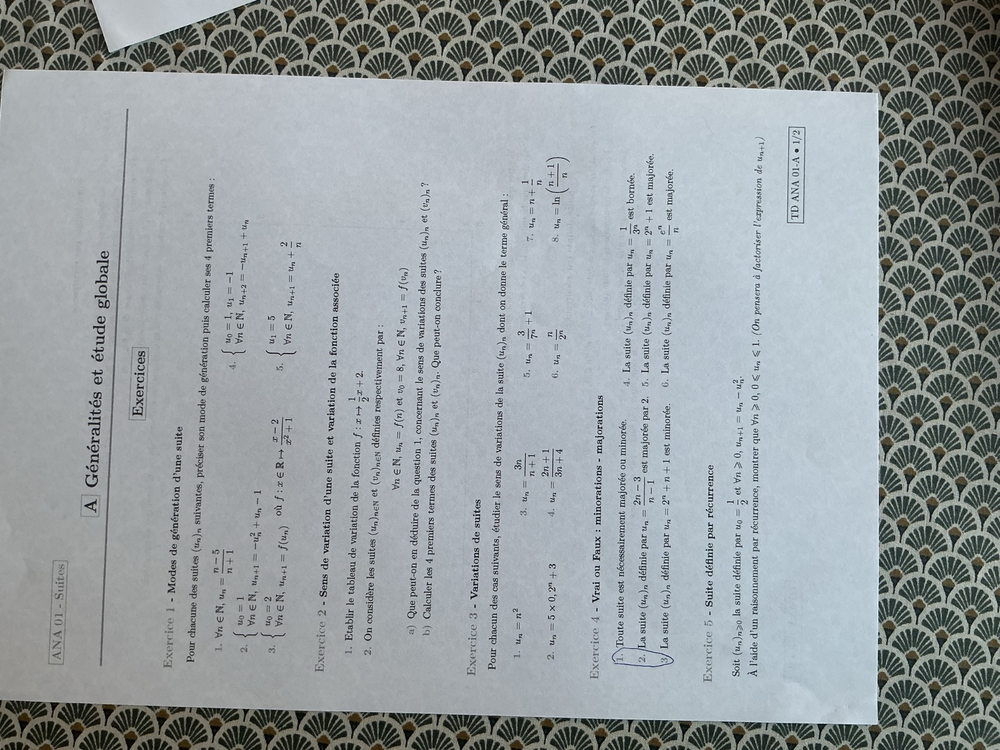
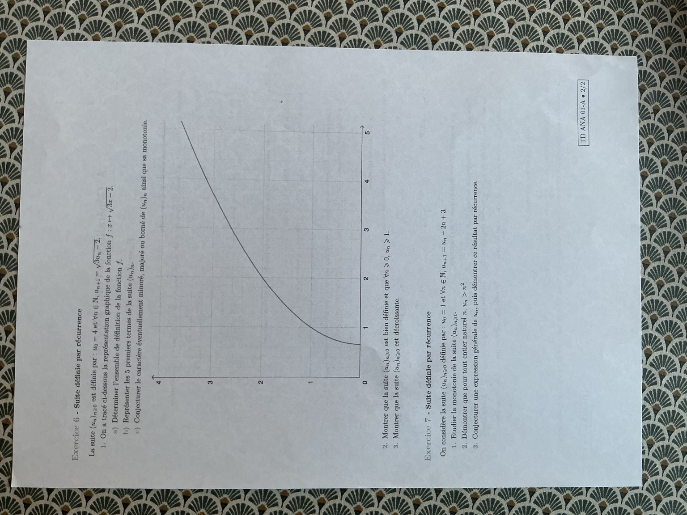
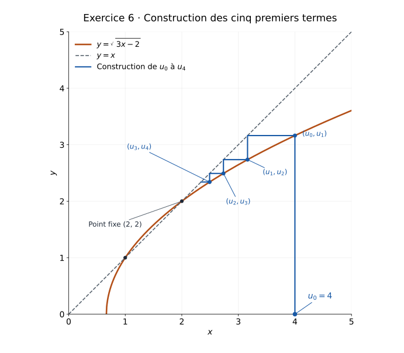

TD · Généralités et étude globale
Sept exercices pour travailler les premiers termes, les variations, les bornes et la récurrence. Toutes les corrections utilisent des valeurs exactes, sans calculatrice.
Les deux pages originales
Les photos sont conservées intégralement, avec leur mise en page et leurs annotations. Elles sont affichées dans le sens de lecture.
Page 1/2 — Exercices 1 à 5

Page 2/2 — Exercices 6 et 7

Choisir sa méthode sans calculatrice
| Ce que l’on cherche | Le bon départ |
|---|---|
| Les premiers termes | Repérer le premier rang. Pour une formule explicite, remplacer \(n\) ; pour une récurrence, utiliser les termes déjà calculés. |
| Les variations | Essayer \(u_{n+1}-u_n\) : positif signifie croissance, négatif signifie décroissance. C’est M1 de A3. |
| Une borne donnée \(M\) | Étudier \(M-u_n\), ou encadrer directement la formule. Une borne doit être une constante. |
| Une propriété d’une suite récurrente | Écrire la propriété \(P(n)\), l’initialisation, l’hérédité puis la conclusion. C’est M4 de A4 pour les bornes. |
| Une construction \(u_{n+1}=f(u_n)\) | Verticale jusqu’à la courbe, puis horizontale jusqu’à la droite \(y=x\). Recommencer. |
On prend \(\mathbb N=\{0,1,2,\ldots\}\), comme dans les fiches. Une division par \(n\) impose \(n\ge1\). Le cas \(1/(n-1)\) demande une précision supplémentaire, traitée dans l’exercice 4. Les mentions du polycopié sont conservées et ces restrictions sont signalées.
Logarithme de l’exercice 3.8 : seule sa croissance est utilisée ; aucune valeur approchée n’est nécessaire.
Exercice 1 — Modes de génération d’une suite
Pour chacune des suites suivantes, préciser son mode de génération puis calculer ses quatre premiers termes.
- \(\forall n\in\mathbb N,\quad u_n=\dfrac{n-5}{n+1}\).
- \(u_0=1\) et \(\forall n\in\mathbb N,\quad u_{n+1}=-u_n^2+u_n-1\).
- \(u_0=2\) et \(\forall n\in\mathbb N,\quad u_{n+1}=f(u_n)\), où \(f:x\in\mathbb R\mapsto\dfrac{x-2}{x^2+1}\).
- \(u_0=1,\ u_1=-1\) et \(\forall n\in\mathbb N,\quad u_{n+2}=-u_{n+1}+u_n\).
- \(u_1=5\) et \(u_{n+1}=u_n+\dfrac2n\). Le polycopié indique \(n\in\mathbb N\) ; la relation doit ici être utilisée pour \(n\ge1\).
Correction détaillée — les cinq suites
1. Une formule explicite
Le terme \(u_n\) se calcule directement à partir du rang \(n\). Le dénominateur \(n+1\ge1\) n’est jamais nul. Les quatre premiers termes sont \(u_0,u_1,u_2,u_3\) :
2. Une récurrence d’ordre 1
Chaque nouveau terme dépend du terme précédent. On commence avec la valeur donnée \(u_0=1\), puis on remplace tous les \(u_n\) par la même valeur.
Les quatre premiers termes sont \(\boxed{1,\ -1,\ -3,\ -13}\).
Attention : \(-(-3)^2=-9\), car on calcule le carré avant d’appliquer le signe moins placé devant.
3. Une récurrence d’ordre 1 avec une fonction
La formule est \(u_{n+1}=(u_n-2)/(u_n^2+1)\). Elle est toujours définie, car \(u_n^2+1\ge1>0\).
On applique \(f\) au terme précédent, pas au rang : ici, \(u_2=f(u_1)\), et non \(f(2)\).
4. Une récurrence d’ordre 2
Il faut connaître deux termes consécutifs pour calculer le suivant. Les deux premières valeurs sont déjà données : \(u_0=1\) et \(u_1=-1\).
Les quatre premiers termes sont \(\boxed{1,\ -1,\ 2,\ -3}\). Il suffit donc de calculer deux nouveaux termes.
5. Une récurrence d’ordre 1 dépendant aussi du rang
La suite commence à \(u_1\). La division \(2/n\) exclut \(n=0\). Il faut calculer \(u_1,u_2,u_3,u_4\), en changeant aussi le rang dans \(2/n\).
Les quatre premiers termes sont \(\boxed{5,\ 7,\ 8,\ \frac{26}{3}}\). La fraction est le résultat exact attendu.
Exercice 2 — Variation d’une suite et de la fonction associée
- Établir le tableau de variation de \(f:x\mapsto\dfrac12x+2\).
- On définit \(u_n=f(n)\) pour \(n\in\mathbb N\), et \(v_0=8,\ v_{n+1}=f(v_n)\).
a) Que peut-on déduire de la question 1 sur les sens de variation de \((u_n)\) et \((v_n)\) ?
b) Calculer les quatre premiers termes des deux suites. Que peut-on conclure ?
Correction détaillée — pourquoi une fonction croissante peut donner une suite décroissante
1. Variations de la fonction
\(f\) est affine, définie sur \(\mathbb R\), de coefficient directeur \(1/2>0\). Elle est donc strictement croissante sur \(\mathbb R\). On peut aussi écrire \(f'(x)=1/2>0\).
| \(x\) | \(-\infty\) | \(+\infty\) | |
|---|---|---|---|
| \(f'(x)\) | \(+\) | ||
| \(f(x)\) | \(-\infty\) | ↗ | \(+\infty\) |
2.a. Ce que cette croissance permet de déduire
Pour \(u_n=f(n)\), on compare \(n\) et \(n+1\). Puisque \(n+1>n\) et \(f\) est strictement croissante,
La suite \((u_n)\) est donc strictement croissante.
Pour \(v_{n+1}=f(v_n)\), la croissance de \(f\) ne suffit pas à décider du sens. Il faut connaître le signe de \(v_1-v_0\). Elle permet ensuite de transmettre ce sens de variation par récurrence.
2.b. Calcul des quatre premiers termes
Les premiers termes de \((v_n)\) diminuent. Pour le démontrer à tous les rangs, on raisonne par récurrence sur \(P(n):v_{n+1}<v_n\).
Initialisation : \(v_1=6<8=v_0\).
Hérédité : si \(v_{n+1}<v_n\), la stricte croissance de \(f\) donne
Conclusion : par récurrence, \((v_n)\) est strictement décroissante.
\((u_n)\) est strictement croissante ; \((v_n)\) est strictement décroissante. Pour une formule explicite, on applique \(f\) au rang ; pour une récurrence, on l’applique au terme précédent.
Quatre valeurs seules permettent une conjecture. La preuve par récurrence permet de conclure pour la suite entière.
Exercice 3 — Variations de suites
Dans chacun des cas suivants, étudier le sens de variation de la suite dont on donne le terme général.
- \(u_n=n^2\).
- \(u_n=5\times0{,}2^n+3\).
- \(u_n=\dfrac{3n}{n+1}\).
- \(u_n=\dfrac{2n+1}{3n+4}\).
- \(u_n=\dfrac3{7^n}+1\).
- \(u_n=\dfrac n{2^n}\).
- \(u_n=n+\dfrac1n\).
- \(u_n=\ln\left(\dfrac{n+1}{n}\right)\).
Les cas 1 à 6 sont définis pour \(n\ge0\). Les cas 7 et 8 commencent à \(n=1\).
Correction détaillée — les huit études de variations
Rappel : on cherche le signe de \(u_{n+1}-u_n\). On remplace chaque occurrence de \(n\) par \(n+1\) et on garde des parenthèses autour du terme soustrait.
1. \(u_n=n^2\)
Pour tout \(n\ge0\), \(2n+1\ge1>0\). Donc \((u_n)\) est strictement croissante sur \(\mathbb N\).
2. \(u_n=5\times0{,}2^n+3\)
On remplace le décimal exact \(0{,}2\) par \(1/5\). Les deux constantes \(+3\) s’annulent dans la différence :
Le dénominateur \(5^n\) est strictement positif. Donc \((u_n)\) est strictement décroissante.
3. \(u_n=\dfrac{3n}{n+1}\)
On commence par écrire \(u_{n+1}=3(n+1)/(n+2)\), puis on met au même dénominateur :
Pour \(n\ge0\), les deux facteurs du dénominateur sont positifs. Donc \((u_n)\) est strictement croissante.
4. \(u_n=\dfrac{2n+1}{3n+4}\)
On développe séparément pour ne pas perdre le signe moins :
Le numérateur vaut donc \(5\). Comme \(3n+7>0\) et \(3n+4>0\),
Ainsi \((u_n)\) est strictement croissante.
5. \(u_n=\dfrac3{7^n}+1\)
On utilise \(7^{n+1}=7\times7^n\), donc \(3/7^n=21/7^{n+1}\).
Donc \((u_n)\) est strictement décroissante.
6. \(u_n=\dfrac n{2^n}\) — attention aux premiers rangs
La différence est utilisable dès \(n=0\), alors que le quotient \(u_{n+1}/u_n\) ne l’est pas puisque \(u_0=0\).
Le dénominateur est positif. Le signe est donc celui de \(1-n\) :
- pour \(n=0\), la différence est positive ;
- pour \(n=1\), elle est nulle ;
- pour \(n\ge2\), elle est strictement négative.
Sur \(\mathbb N\), la suite n’est pas monotone. Elle est décroissante au sens large à partir du rang 1, et strictement décroissante à partir du rang 2.
L’égalité \(u_1=u_2\) empêche de dire « strictement décroissante dès le rang 1 ».
7. \(u_n=n+\dfrac1n\), pour \(n\ge1\)
Comme \(n\ge1\), on a \(n(n+1)\ge2\), puis \(1/[n(n+1)]\le1/2\). Par conséquent,
Donc \((u_n)\) est strictement croissante pour \(n\ge1\). Aucun logarithme ni tableau de dérivée n’est nécessaire.
8. \(u_n=\ln\left(\dfrac{n+1}{n}\right)\), pour \(n\ge1\)
L’argument du logarithme est \(1+1/n>0\), donc tous les termes sont bien définis. Pour \(n\ge1\),
La fonction \(\ln\) est strictement croissante sur \(]0,+\infty[\). Elle conserve donc cette inégalité :
Ainsi \((u_n)\) est strictement décroissante pour \(n\ge1\). Il suffit de comparer les arguments : on n’évalue aucun logarithme.
Exercice 4 — Vrai ou faux : minorations et majorations
Dire si chacune des affirmations suivantes est vraie ou fausse.
- Toute suite est nécessairement majorée ou minorée.
- La suite définie par \(u_n=\dfrac{2n-3}{n-1}\) est majorée par 2.
- La suite définie par \(u_n=2^n+n+1\) est minorée.
- La suite définie par \(u_n=\dfrac1{3n}\) est bornée.
- La suite définie par \(u_n=2^n+1\) est majorée.
- La suite définie par \(u_n=\dfrac{e^n}{n}\) est majorée.
Le polycopié ne précise pas les rangs de départ. Pour les cas 4 et 6, on prend \(n\ge1\). Le cas 2 nécessite de distinguer les domaines.
Correction détaillée — justifications et restrictions de domaine
1. « Toute suite est majorée ou minorée » : faux
Un contre-exemple suffit : prenons \(u_n=(-1)^n n\). Pour un rang pair \(n=2k\), \(u_{2k}=2k\), qui peut dépasser n’importe quel majorant proposé. Pour un rang impair \(n=2k+1\), \(u_{2k+1}=-(2k+1)\), qui peut être inférieur à n’importe quel minorant proposé.
Cette suite n’est ni majorée ni minorée. Elle contredit donc l’affirmation.
2. \(\dfrac{2n-3}{n-1}\) majorée par 2 : vrai pour \(n\ge2\)
On ne peut pas utiliser la formule au rang 1 : son dénominateur est nul. Si l’on considère la suite à partir du rang 2, on écrit :
Pour \(n\ge2\), \(n-1>0\), donc \(1/(n-1)>0\). Ainsi \(u_n<2\) : 2 est un majorant.
Précision sur l’énoncé : sur \(\mathbb N\), cette suite n’est pas définie au rang 1. Si l’on conserve aussi le rang 0 parmi les rangs admissibles, \(u_0=(-3)/(-1)=3>2\), et l’affirmation devient fausse. La réponse « vrai » suppose donc explicitement un départ au rang 2.
3. \(2^n+n+1\) minorée : vrai
Pour \(n\ge0\), \(2^n\ge1\) et \(n\ge0\). En additionnant,
Donc 2 est un minorant. Il est atteint au rang 0 : \(u_0=2\).
4. \(\dfrac1{3n}\) bornée : vrai, pour \(n\ge1\)
Le dénominateur est bien \(3n\), et non \(3^n\). Pour \(n\ge1\), \(3n\ge3>0\). En passant aux inverses,
La suite est minorée par 0 et majorée par \(1/3\), donc bornée. Le minorant 0 n’a pas besoin d’être atteint.
5. \(2^n+1\) majorée : faux
On peut utiliser l’inégalité \(2^n\ge n+1\), valable pour tout \(n\ge0\). Voici sa preuve exacte :
Initialisation : \(2^0=1\ge0+1\).
Hérédité : si \(2^n\ge n+1\), alors \(2^{n+1}\ge2(n+1)=2n+2\ge n+2\), car \(n\ge0\). L’inégalité est donc démontrée par récurrence.
Quel que soit le nombre réel \(M\) proposé comme majorant, on peut choisir un entier \(n\) assez grand pour que \(n+2>M\). Alors \(u_n>M\). La suite n’est pas majorée.
6. \(\dfrac{e^n}{n}\) majorée : faux, pour \(n\ge1\)
Réponse courte si les croissances comparées ont déjà été vues : \(\lim_{n\to+\infty}e^n/n=+\infty\), donc la suite n’est pas majorée. Aucune valeur approchée de \(e\) n’est nécessaire.
Une justification sans utiliser les croissances comparées
On utilise seulement \(e>2\). Cette inégalité exacte se justifie par \(g(x)=e^x-1-x\) : \(g(0)=0\) et \(g'(x)=e^x-1>0\) pour \(x>0\), donc \(g(1)=e-2>0\).
Posons \(q=e/2>1\). Les termes étant strictement positifs, pour \(n\ge1\),
car \(n/(n+1)\ge1/2\) équivaut à \(2n\ge n+1\), c’est-à-dire \(n\ge1\). Ainsi \(u_{n+1}\ge q\,u_n\). En répétant depuis \(u_1=e\), on obtient
Pour voir directement que cette borne inférieure dépasse tout nombre, posons \(a=q-1>0\). L’inégalité \((1+a)^k\ge1+ka\) se démontre par récurrence : elle est vraie pour \(k=0\), et la multiplication par \(1+a>0\) donne
On a donc \(u_n\ge e[1+(n-1)a]\), dont le membre de droite dépasse tout réel pour \(n\) assez grand. La suite n’est pas majorée.
À éviter : « Le numérateur tend vers l’infini, donc le quotient aussi » n’est pas une preuve : \(n/n=1\) montre pourquoi il faut comparer les deux croissances.
Exercice 5 — Une suite définie par récurrence
Soit \((u_n)_{n\ge0}\) définie par
À l’aide d’un raisonnement par récurrence, montrer que, pour tout \(n\ge0\), \(0\le u_n\le1\). On pensera à factoriser l’expression de \(u_{n+1}\).
Correction détaillée — factoriser puis encadrer le produit
1. La propriété à démontrer
La suite est bien définie à tous les rangs : la formule ne comporte que des opérations sur des réels, sans division ni racine.
2. Initialisation
\(u_0=1/2\), donc \(0\le u_0\le1\). Ainsi \(P(0)\) est vraie.
3. Hérédité
Soit \(n\ge0\). On suppose \(P(n)\) vraie : \(0\le u_n\le1\). On doit prouver \(0\le u_{n+1}\le1\).
On factorise en mettant \(u_n\) en facteur :
De \(0\le u_n\le1\), on déduit \(0\le1-u_n\le1\). Comme \(u_n\ge0\), on peut multiplier cette dernière inégalité par \(u_n\), sans en changer le sens :
Or \(u_n\le1\) par hypothèse. Ainsi
On a bien \(0\le u_{n+1}\le1\) : \(P(n+1)\) est vraie.
4. Conclusion
Par récurrence, \(\boxed{\forall n\ge0,\quad0\le u_n\le1}\). La suite est donc bornée.
Pourquoi la factorisation aide : le produit de deux nombres positifs est positif. Avec l’écriture \(u_n-u_n^2\), le signe de la différence était moins immédiat.
Erreur à éviter : encadrer séparément \(u_n\) et \(-u_n^2\) par \(0\le u_n\le1\) et \(-1\le-u_n^2\le0\) ne donnerait que \(-1\le u_{n+1}\le1\). Cela ne suffit pas pour obtenir le minorant 0 demandé.
Exercice 6 — Récurrence avec une racine carrée
La suite \((u_n)_{n\ge0}\) est définie par
- On dispose de la courbe de \(f:x\mapsto\sqrt{3x-2}\) sur la page 2 du document.
a) Déterminer l’ensemble de définition de \(f\).
b) Représenter les cinq premiers termes de \((u_n)\).
c) Conjecturer le caractère éventuellement minoré, majoré ou borné de \((u_n)\), ainsi que sa monotonie.
- Montrer que la suite est bien définie et que, pour tout \(n\ge0\), \(u_n\ge1\).
- Montrer que la suite est décroissante.
Correction détaillée — domaine, escalier, bornes et décroissance
1.a. Ensemble de définition de la fonction
Une racine carrée réelle existe si et seulement si son contenu est positif ou nul :
Donc \(\boxed{D_f=\left[\frac23,+\infty\right[}\). Le nombre \(2/3\) est inclus, car \(\sqrt0\) existe.
1.b. Les cinq premiers termes
La suite commence au rang 0 : les cinq premiers termes sont \(u_0,u_1,u_2,u_3,u_4\). On applique la formule quatre fois :
Ces racines sont des valeurs exactes. Il n’est pas nécessaire de les transformer en décimaux pour réaliser la construction demandée.
Construire les termes sur le graphique du polycopié
- Tracer la première bissectrice, la droite \(y=x\), qui passe par \((0,0)\), \((1,1)\), \((2,2)\), etc.
- Placer \(u_0=4\) sur l’axe horizontal. Tracer la verticale jusqu’à la courbe : on arrive au point \((u_0,u_1)\).
- Tracer l’horizontale jusqu’à la droite \(y=x\) : on arrive au point \((u_1,u_1)\). Cela reporte \(u_1\) en abscisse.
- À partir de ce point, tracer la verticale jusqu’à la courbe : on arrive en \((u_1,u_2)\). Ici, on descend.
- Recommencer avec une horizontale vers la bissectrice puis une verticale vers la courbe, jusqu’à obtenir \(u_4\). Une projection verticale sur l’axe horizontal permet de reporter chaque valeur \(u_k\).

1.c. Conjectures graphiques
L’escalier semble descendre vers 2. On conjecture que la suite est décroissante, minorée par 2 et majorée par 4, donc bornée. À ce stade, il s’agit d’une lecture graphique, pas encore d’une preuve.
2. Bien-définition et minoration par 1
On démontre par récurrence la propriété
Initialisation : \(u_0=4\) est bien défini et \(4\ge1\).
Hérédité : supposons \(u_n\) bien défini et \(u_n\ge1\). On suit les opérations de la formule :
La racine carrée existe, donc \(u_{n+1}\) est bien défini. La fonction racine carrée est croissante sur les réels positifs :
On obtient exactement \(P(n+1)\).
Conclusion : pour tout \(n\ge0\), \(u_n\) est bien défini et \(u_n\ge1\).
On multiplie par 3 puis on soustrait 2 parce que la formule contient \(3u_n-2\). Les opérations viennent de la relation de récurrence, pas du nombre choisi comme borne.
3. Démontrer que la suite est décroissante
On utilise la croissance de \(f\) pour transmettre une première comparaison. Pour \(x<y\) dans \(D_f\), on a \(3x-2<3y-2\), puis \(\sqrt{3x-2}<\sqrt{3y-2}\). Ainsi \(f\) est strictement croissante sur \(D_f\).
On démontre par récurrence \(Q(n):u_{n+1}<u_n\).
Initialisation : \(u_1=\sqrt{10}\) et \(u_0=4=\sqrt{16}\). Comme \(10<16\), on a \(\sqrt{10}<\sqrt{16}=4\). Donc \(u_1<u_0\), sans calculatrice.
Hérédité : supposons \(u_{n+1}<u_n\). Les deux termes appartiennent à \(D_f\), d’après la question 2. La stricte croissance de \(f\) donne :
C’est \(Q(n+1)\).
Par récurrence, la suite est strictement décroissante, donc décroissante comme demandé. En particulier, \(1\le u_n\le u_0=4\) pour tout \(n\ge0\) : elle est bornée.
Complément — justifier aussi la borne 2 observée
On peut améliorer la minoration par une courte récurrence : \(u_0=4>2\), et si \(u_n>2\), alors \(3u_n-2>4\), donc \(u_{n+1}>\sqrt4=2\). Ainsi
On a maintenant prouvé les bornes conjecturées. La recherche d’une limite n’est pas demandée dans ce TD.
Exercice 7 — Conjecturer puis démontrer une formule
On considère la suite définie par
- Étudier la monotonie de la suite.
- Démontrer que, pour tout entier naturel \(n\), \(u_n>n^2\).
- Conjecturer une expression générale de \(u_n\), puis la démontrer par récurrence.
Correction détaillée — monotonie, inégalité et terme général
1. Monotonie
La formule donne immédiatement la différence :
Pour \(n\ge0\), \(2n+3\ge3>0\). Donc \((u_n)\) est strictement croissante.
2. Prouver \(u_n>n^2\) sans utiliser la question suivante
On démontre par récurrence \(P(n):u_n>n^2\).
Initialisation : \(u_0=1>0=0^2\).
Hérédité : soit \(n\ge0\). On suppose \(u_n>n^2\). On ajoute \(2n+3\) aux deux membres :
On a donc \(P(n+1)\). Le développement \((n+1)^2=n^2+2n+1\) explique le \(+2\) restant.
Conclusion : par récurrence, \(\boxed{\forall n\ge0,\ u_n>n^2}\).
3. Conjecturer une expression générale
Calculons quelques termes, en remplaçant aussi \(n\) dans \(2n+3\) :
On reconnaît \(1^2,2^2,3^2,4^2,5^2\). Au rang \(n\), le carré semble être celui de \(n+1\). On conjecture donc
Démonstration de cette formule par récurrence
Posons \(R(n):u_n=(n+1)^2\).
Initialisation : \(u_0=1=(0+1)^2\).
Hérédité : supposons \(u_n=(n+1)^2\). Alors
Or au rang \(n+1\), la formule à obtenir est précisément \(u_{n+1}=((n+1)+1)^2=(n+2)^2\). L’hérédité est établie.
Conclusion : par récurrence, \(\boxed{\forall n\ge0,\quad u_n=(n+1)^2}\).
La formule confirme la question 2 : \(u_n-n^2=(n+1)^2-n^2=2n+1>0\). Cette vérification vient après la démonstration du terme général.
Résultats à vérifier après ta recherche
Afficher le tableau des réponses
| Exercice | Résultat |
|---|---|
| 1.1 | Explicite : \(u_0=-5,\ u_1=-2,\ u_2=-1,\ u_3=-1/2\). |
| 1.2 | Récurrence d’ordre 1 : \(1,-1,-3,-13\). |
| 1.3 | Récurrence d’ordre 1 : \(2,0,-2,-4/5\). |
| 1.4 | Récurrence d’ordre 2 : \(1,-1,2,-3\). |
| 1.5 | Récurrence d’ordre 1 : \(u_1=5,\ u_2=7,\ u_3=8,\ u_4=26/3\). |
| 2 | \(f\) strictement croissante ; \((u_n)\) strictement croissante ; \((v_n)\) strictement décroissante. |
| 3.1 à 3.5 | Strictement : croissante, décroissante, croissante, croissante, décroissante. |
| 3.6 | Non monotone sur \(\mathbb N\) ; décroissante dès le rang 1, strictement dès le rang 2. |
| 3.7 et 3.8 | Sur \(n\ge1\) : strictement croissante ; strictement décroissante. |
| 4 | 1 : faux. 2 : vrai pour \(n\ge2\), domaine à préciser. 3 : vrai. 4 : vrai pour \(n\ge1\). 5 : faux. 6 : faux pour \(n\ge1\). |
| 5 | \(0\le u_n\le1\), par récurrence avec \(u_{n+1}=u_n(1-u_n)\). |
| 6 | \(D_f=[2/3,+\infty[\). Suite bien définie, strictement décroissante, \(2<u_n\le4\). |
| 7 | Strictement croissante ; \(u_n>n^2\) ; \(u_n=(n+1)^2\). |
A1 — Notations · A2 — Graphiques · A3 — Variations · A4 — Bornes · Tous les cours prépa de maths